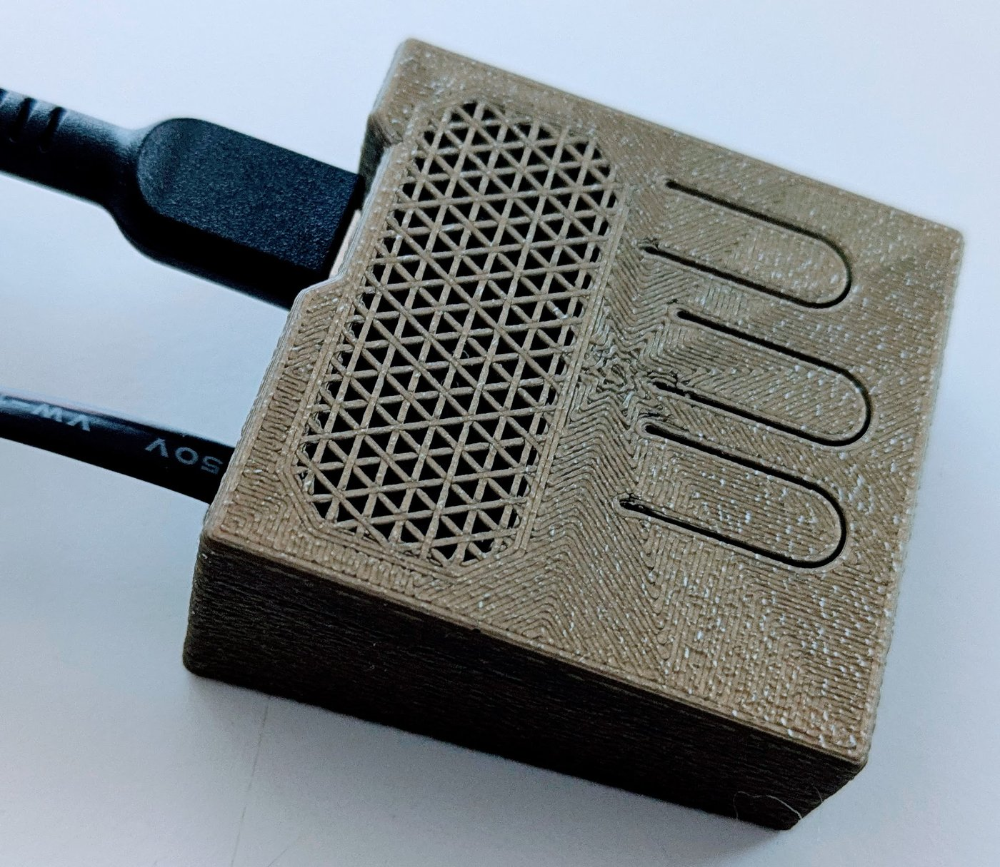

Your voice carries a melody that tells people how you feel. The problem isn't you — it's that the melody disappears before it arrives.
Human speech is not a single tone. It's a rich chord — dozens of frequencies layered on top of each other. At the base is the fundamental pitch (F0): the note your vocal cords produce. Above it, a rising stack of harmonics, each at a precise multiple of that frequency.
Intonation — the melody of speech — rides on F0. It rises when you ask a question. Softens when you're being gentle. Sharpens when you're being serious. It's the signal underneath the words that tells people how you actually feel.
It's also the signal that doesn't survive the room.
H1 — the fundamental pitch that carries intonation melody — propagates spherically, spreading energy in all directions equally. Higher harmonics are more directional, delivering more of their energy toward the listener. At social distances, H1 attenuates faster relative to the harmonic series above it: the listener receives the overtone structure of the voice, but not the fundamental that shaped it. At intimate range this isn't a problem — H1 survives. At social distances — across a table, in a meeting, in a classroom — it is effectively gone from the signal that reaches the listener.
This is not a flaw. It is physics. No one is at fault. But the effect is real, and consequential.
The missing fundamental illusion (MFI): When the fundamental pitch is absent, the brain doesn't register silence. It fills the gap automatically — reconstructing the missing pitch from the harmonics that remain. For most people, this reconstruction is reliable. For a significant number, it produces a confident misreading. Experience it directly →
When intonation melody is absent, the auditory pathway attempts to reconstruct the missing fundamental from harmonic content — a complex process spanning multiple stations from brainstem structures including the superior olivary complex through auditory cortex, likely with frontal involvement in voice identification and top-down decoding. For many people this process works reliably. For a significant number it does not — and where in the pathway it fails is not yet well characterized. Critically, when reconstruction does occur it happens below conscious awareness, with full confidence. The listener experiences the reconstructed emotional tone as direct perception. There is no flicker of doubt.
What reaches the listener at social distance is a complex stack of overtones — without the fundamental pitch that shaped them.
Multiple stations of the auditory pathway — from brainstem through cortex — attempt to reconstruct the missing fundamental from surviving harmonics. For many people this works reliably. For a significant number the pathway does not perform the reconstruction reliably. Where the process fails is not yet well characterized.
The listener experiences the reconstructed emotional tone as what actually happened. They heard what they heard. Except the signal they received was incomplete, and their inference was wrong.
Someone says "that's clever" with a bored, done tone. You reconstruct it as genuine interest. You keep talking. They disengage. You are responding to a conversation that doesn't exist. This happens quietly, continuously, across every social relationship you have.
The problem runs in both directions. As a speaker, the emotional information you receive about what you're producing is the intonation melody you hear yourself make. But at social distances, that melody is absent from the signal other people receive.
Without a reliable information loop, you cannot adjust. You might think you sound warm. You sound flat. You think you sound enthusiastic. You sound pedantic. Your intentions are genuine. The feedback you're receiving isn't accurate.

resonero processor — speaker grille and control face
Resonero is a room acoustics device. It captures vocal signal from close range — before H1 dissipates — and delivers it acoustically back into the room at conversational distance. Intonation melody, which survives in media, in close-miked broadcast voice, in film, in pillow talk, becomes reliably present in face-to-face social speech — the one context where H1 attenuation has always stripped it out.
These circuits have been stimulated before — by film, radio, podcasts, intimate conversation. What Resonero provides is reliable stimulation in the specific context that has always lacked it: normal face-to-face speech at social distances, where H1 doesn't survive the propagation from mouth to ear.
Clear intonation melody — not reconstructed, not inferred. Accurate emotional perception. The warmth, care, and intent in someone's voice become legible.
With accurate intonation information available, speakers can perceive and shape what they're actually producing. The funhouse mirror is replaced with a clear one.
No interface to manage. No mode to enter. No explanation to offer. Like eyeglasses — the augmentation disappears into the experience it enables. Simply present.